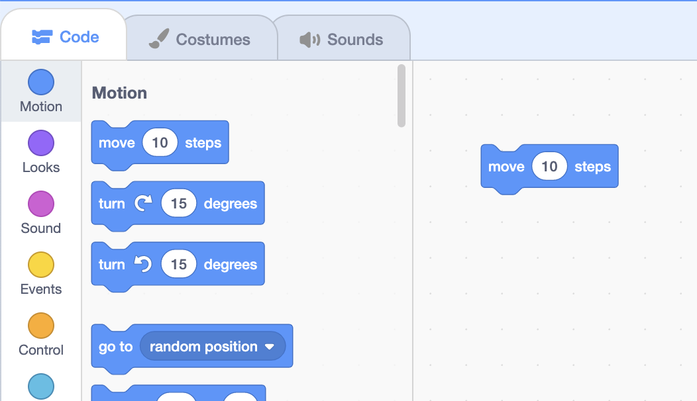
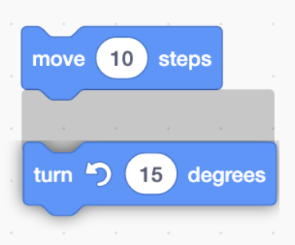

Functions
Last time
- Last time, we introduced the stage and sprites, with costumes, sounds, and backdrops. But we made all of our changes manually, by clicking and dragging, for example.
- We’ll open a new Scratch project, and recall that we can move our cat around the stage by clicking and dragging, or changing the value of its x- and y-coordinates.
Functions
- To the left of Scratch’s interface, we’ll see blocks.
- A function, in the context of Scratch, is some block that performs some task.
- The very first block, for example, says “move 10 steps”, and we can use it by dragging it from the library of blocks to the left, to the editor part of our project in the center.

- Now, we’ve added our first function, and if we click the block, we see that our cat will move slightly to the right, and the x-value of its position has updated as well.
- We can see this example at Move.
Inputs
- Notice that there’s an area in the block with a value of 10, that we can change. This value is called an input to a function, or information that a function can use to change how it behaves.
- For the move block, the input is a number indicating the number of steps to move. We can change it to move our cat 30 steps, for example:
move (30) steps - We can add other blocks, too, like:
turn right (15) degrees - We can see this example at Move and Turn.
Scripts
- We might want our blocks to be combined, so that a sequence of multiple instructions can be followed.
- We can snap our two blocks together by dragging one of them towards the other, and we see a highlighted area when they’re close together:

- After we release the mouse, we see that they snap together.
- Now our stack of blocks can be called a script, where all the blocks will run in order, from top to bottom, when we click on one of them:
move (30) steps turn right (15) degrees- We can click this stack of blocks over and over again, and they’ll make our cat move in a circle.
- There are many blocks we can use for our scripts, in multiple categories. We can try this block, too:
go to (random position v) - And if we want to delete a block, we can hold down the control key and click, or right-click, and choose the “Delete Block” option. We can also drag the block back towards the block library, and it will go away if we release it anywhere inside that area.
Walking around
- We’ll delete our cat, and choose a new sprite for our next program, Glide, where we’ll have our sprite move around the stage.
- Let’s use the hedgehog, and we’ll start by using the “go to” block to make sure we start on the top left:
go to x: (-180) y: (120) - We’ll use another block to move our hedgehog to the top right, after:
go to x: (-180) y: (120) go to x: (180) y: (120) - Then we want to move to the bottom right:
go to x: (-180) y: (120) go to x: (180) y: (120) go to x: (180) y: (-120) - And finally, the bottom left, with both values negative:
go to x: (-180) y: (120) go to x: (180) y: (120) go to x: (180) y: (-120) go to x: (-180) y: (-120) - When we click on this stack of blocks, our hedgehog seemed to jump immediately to the lower left. It turns out that our computer runs our programs very quickly, so the hedgehog moved so fast that we saw just the final location.
- We can use a different block, called “glide”, to move over some amount of time. We’ll drag the bottom three “go to” blocks out of our script, since we still want to start immediately on the top left, and add “glide” blocks for each of the other three positions as before:
go to x: (-180) y: (120) glide (1) secs to x: (180) y: (120) glide (1) secs to x: (180) y: (-120) glide (1) secs to x: (-180) y: (-120) - Now, when we run our script again by clicking on the stack of blocks, we see our hedgehog moving as we expected. We can add one more glide, so that it moves back to the original position:
go to x: (-180) y: (120) glide (1) secs to x: (180) y: (120) glide (1) secs to x: (180) y: (-120) glide (1) secs to x: (-180) y: (-120) glide (1) secs to x: (-180) y: (120)
Comments
- Our program is getting a little complicated, so we can use comments, or short descriptions of what we were trying to do, as a reminder for ourselves or guide to others to understand our program.
- We can control-click or right-click our stack of blocks, and use “Add Comment” to write a comment, like a note for us which won’t affect how our program runs:
go to x: (-180) y: (120) // These blocks move the sprite in a rectangle. glide (1) secs to x: (180) y: (120) glide (1) secs to x: (180) y: (-120) glide (1) secs to x: (-180) y: (-120) glide (1) secs to x: (-180) y: (120) - We can use other motion blocks to change our sprite’s direction, and move in other ways as well.
Looks
- We’ll go to the “Looks” category of blocks now, by clicking on it on the left. We’ll drag away our other blocks, and drag in a “say Hello!” block for Say:
say [Hello!] - Now, when we click this block, a speech bubble appears next to our sprite.
- Let’s add another block to say goodbye:
say [Hello!] say [Goodbye!] - But when we click this stack of blocks, we have a similar bug, or problem with our program: Scratch is running these blocks so quickly that we don’t have time to see the “Hello!”, since it’s immediately changed to “Goodbye!”.
- We’ll replace our blocks with another type of block:
say [Hello!] for (2) seconds say [Goodbye!] for (2) seconds- Now, we have time to see each message from our hedgehog.
Costumes
- “Looks” blocks can also change the costume of our sprites, so we’ll delete our hedgehog sprite and create a new one: a bear this time in Bear 1.
- It turns out that the bear has two costumes available already, “bear-a” and “bear-b”.
- We can start by using blocks to choose the first costume for our bear, and place it towards the left of the stage:
switch costume to (bear-a v) go to x: (-120) y: (-50) - We’ll add blocks to make our bear move across the stage, and for it to stand up after:
glide (2) secs to x: (120) y: (-50) switch costume to (bear-b v) - We can try clicking our stack of four blocks to see this happen.
- Now, let’s add new backdrops by selecting “Forest” and “Woods and Bench” after clicking the “Choose a Backdrop” button in the Stage panel in the bottom right.
- We can use a block to make sure that our story always starts with the “Forest” backdrop:
switch backdrop to (Forest v) go to x: (-120) y: (-50) switch costume to (bear-a v)- We’ll also tell our bear to start on the left, and switch its costume to not be standing up.
- These three blocks will all run really quickly, so it looks like they all happened at the same time, but they actually still run one at a time. In this case, since they all run so fast, it doesn’t matter what order they’re in.
- Now we’ll tell our bear to “walk” across the stage with the “glide” block as before:
glide (3) secs to x: (300) y: (-50) switch backdrop to (Woods And Bench v)- With a large x-value, our bear will walk off the right of the stage.
- Once it does that, our backdrop will change to a different one, as though our bear has reached a new area.
- Then, we’ll have our bear “walk” in, starting from the left side of the stage and stopping in the middle:
go to x: (-300) y: (-50) glide (3) secs to x: (0) y: (-50) - Now, we have a stack of seven blocks that, when clicked, tell a story with our bear. If something didn’t work as we’d expect, we might want to try different values for our bear’s position, or time it takes to glide across the stage.
- There are two more blocks that might be useful, “show”, and “hide”, which makes our sprite appear or disappear:
show hide
Sound, Control
- The “Sound” category of blocks can play sounds:
play sound (pop v) until done - Another useful block is in the Control category, called “wait”:
wait (1) seconds- This will tell our sprite to pause and not do anything, so we can control the timing of our project.
- We’ll delete our bear, and change the backdrop back to the default white backdrop.
- We’ll add a new sprite, the Duck, and use the blocks we’ve seen to play hide and seek:
hide wait (1) seconds show play sound (duck v) until done- Now, our duck will disappear, then appear again and play a sound.
- It turns out that we can record our own sounds, upload sounds from our computer, or even play musical notes.
Extensions
- We’ll delete our duck sprite, and pick the cat again. In the bottom left of Scratch’s interface, we have this blue icon with blocks and a plus sign, for adding extensions, or more categories of blocks:
Music
- We’ll start with Music by trying to play a note with this block:
play note (60) for (0.25) beats- The number 60 corresponds to some note, or sound, and 0.25 beats indicates how long it will be played for.
- We can click on the number 60, which will show a piano keyboard, and as we click on each key, we can see the note number change and hear what it will sound like.
- We’ll use eight of these blocks, and play all the white keys on the keyboard in sequence:
play note (60) for (0.25) beats play note (62) for (0.25) beats play note (64) for (0.25) beats play note (65) for (0.25) beats play note (67) for (0.25) beats play note (69) for (0.25) beats play note (71) for (0.25) beats play note (72) for (0.25) beats- Now, when we click on this stack of blocks, we’ll hear a musical scale played.
- We can also change the instrument so the notes sound different:
set instrument to (\(4\) Guitar v)- We drag this block to the top of our stack so it runs before the notes are played.
- We can also play our notes more quickly or slowly by changing the tempo:
set tempo to (80)- A bigger number, like 80, will make our notes play more quickly, while a smaller number, like 40, will make our notes play more slowly.
Pen
- We’ll try another extension, the Pen extension. With this, we can move our sprite around the stage, and virtually put a pen down to “draw” on the stage. Let’s take a look at the Pen example.
- We’ll start by putting the pen down, moving 30 steps, and picking the pen up:
pen down move (30) steps pen up- We can click this stack of blocks, and our cat will continue to move 30 steps and drawing a line as it moves.
- When we pick “up” the pen, our sprite will no longer draw when it moves. We can move our cat in a circle:
pen down move (30) steps turn right (15) degrees pen up- Now our cat will move a bit, rotate, and draw a circle as we keep clicking this stack of blocks.
Next time
- With blocks in the Motion, Looks, Sound, and Control categories, as well as other types from extensions, we can create all sorts of stories and programs with Scratch.
- Next time, we’ll see how we can use even more types of blocks, combined with what we’ve seen, to take our projects even futher.